Questionnaires & Custom Data Collection
Overview
Every data collection project is different - starting with the questions you're asking. These questions shape everything about the project- including the entry fields for data collection.
The Cadasta Platform allows you to define your own data collection schema, so you can tailor it around the specific questions you're asking. These questions could include contact details, geographic place names or how the land was acquired.
In the Cadasta Platform, the underlying technology that enables this comes from XLSForm. XLSForm is a form standard that allow you to create forms using a spreadsheet. The forms (which we call questionnaires) are low-fi alternatives to a database. They are also designed to handle information of varying degrees of complexity.
You can start your project with one of these two ready-to-go questionnaires:
The minimum questionnaire - which creates a schema for the bare minimum of data needed by the platform; and
The standard questionnaire - which is the starting point for many of our partners. It includes the same entry fields as the minimum questionnaire, with some added.
You can use either of these forms as starting points for your project. You can also modify parts of these forms to fit your data collection needs.
If you need to significantly modify these data entry fields, see the section on customizing your questionnaire.
Important note: You can make small changes to your questionnaire - such as adding a row - and reupload it to an existing project. However, if your questionnaire changes significantly, you may need to start a new project.
If you have questions about how to use these questionnaires, contact us at any time.
The Minimum Questionnaire
The minimum questionnaire has the essential fields you need for data collection using the Cadasta Platform.
This questionnaire has three tabs:
- Survey
- Choices, and
- Settings.
The Survey tab shows the overall data collection schema.
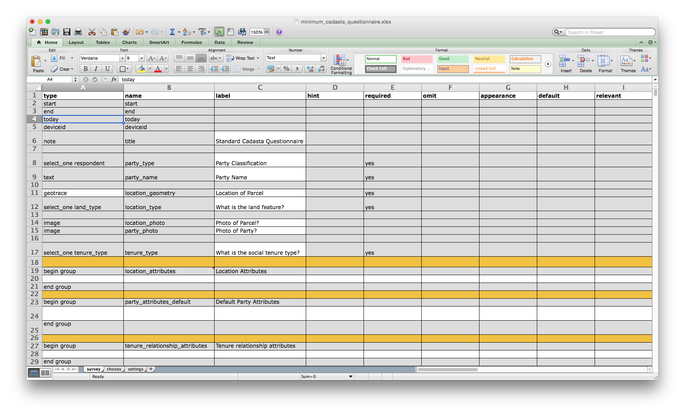
The areas in gray are fields that the Cadasta platform requires to work. Some of them (like deviceid) are used behind the scenes, so you'll never see them in the Platform, ODK, or GeoODK. (Note! Do not tamper with any of the gray fields!)
The first three columns are important ones for you to know about:
typespecifies the type of entry you're adding - be it text, a date, a dropdown or something else.namespecifies the variable used for that entry. No two names can be the same!labelshows the text that will actually be seen on the form. Fields in white can be modified as needed.
The Choices tab is where the choices for all the drop-down menus are stored.
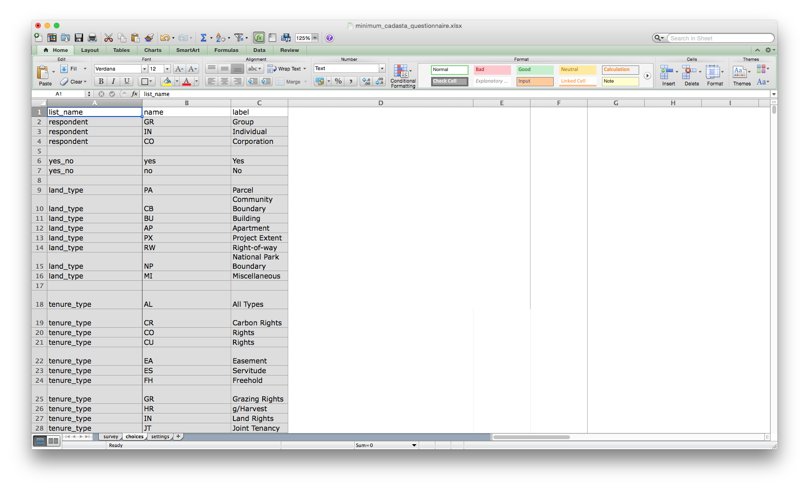
For example, the respondent entries Group, Individual and Corporation (A2 - A4 in the image above) correspond with this dropdown menu in the Add Relationship popup:
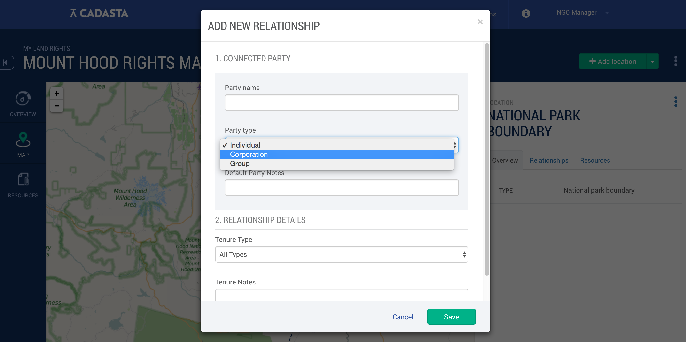
The Settings tab shows you the form_id and title of the questionnaire. You'll use this ID when you set up data collection with ODK and GeoODK.
Make sure all of the questionnaires in your organization have unique form IDs. Otherwise, they won't load, and you'll default to using the original form with that ID. Also be sure to create names that start with lowercase letters and contain no spaces.
The Standard Questionnaire
The standard questionnaire has all the same questions as the mininimal version, with quite a few added. You can see many of these choices indicated in the Survey tab.
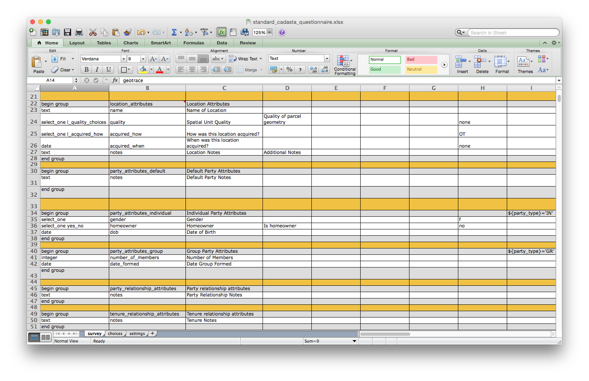
The image above shows all the entries that will be collected in addition to the minimal information. These entries are organized by section:
- Location Attributes (rows 22-28)
- Default Party Attributes (rows 20-32)
- Individual Party Attributes (rows 34-38)
- Group Party Attributes (rows 40-43)
- Party Relationship Attributes (45-47)
- Tenure Relationship Attributes (49-51)
Each of these sections relates to a data collection window in the cadasta platform.
The Choices tab has the same options as the minimal questionnaire, with some additional drop-down choices as well.
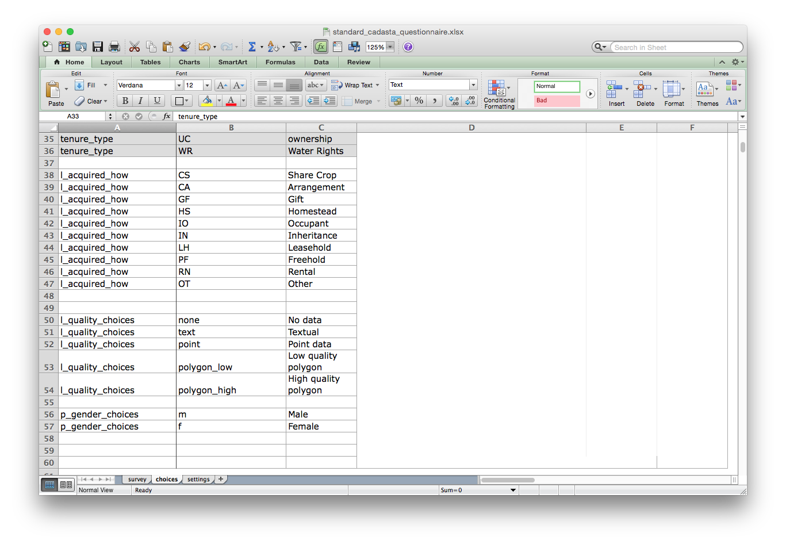
For example, rows 38-47 show the choices for the different types of location acquisitions, which correspond with row 25 on the Survey tab (above).
The Settings tab of the standard questionnaire is exactly the same as it is in the minimal version - providing the form_id, which is your identifier for the questionnaire in ODK or GeoODK.
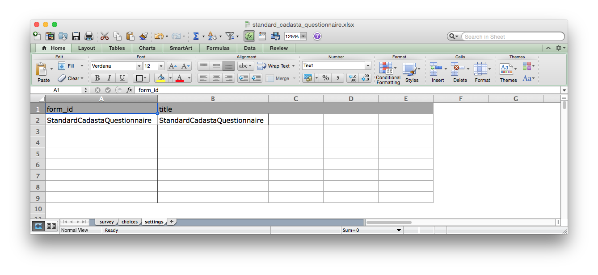
Make sure all of the questionnaires in your organization have unique form IDs. Otherwise, they won't load, and you'll default to using the original form with that ID. Also be sure to create names that start with lowercase letters and contain no spaces.
Customizing Your Questionnaire
If you need to collect different data than what's in the standard questionnaire, and more than what's in the minimum questionnaire, you can customize these forms to meet your needs. Any entry with a white background can be modified. Fields with a gray background need to remain as they are in order for everything to work.
Basic Customization
Deleting Unnecessary Fields
If there's a field that you don't want to include, simply delete its row from the survey tab of the questionnaire. To do this in Excel, right-click the row and then select Delete.
Important note! Remember that fields in gray cannot be deleted or modified; only delete rows that have completely white backgrounds.
Editing Drop-Down Fields
To edit a field in a drop-down menu, navigate to the Choices tab. There, you can modify the name and label of the fields as needed.
For example, to add a new field to the location acquisition dropdown (l_acquired_how):
- Add a new row, and give it a
list_nameofl_acquired_how. - Add a new name and label.
In the example below, a new category for the dropdown ("Unknown") has been added to the questionnaire.
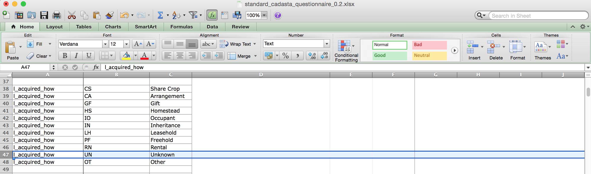
Once that questionnaire is saved and loaded into the project, the new "Unknown" option will appear in the dropdown under, "How was this location acquired?"
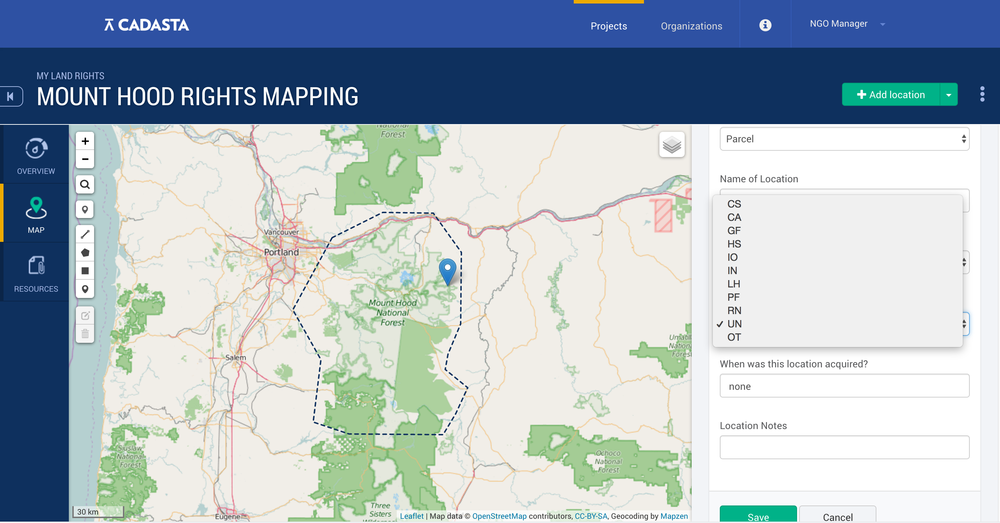
GeoTrace, GeoShape and GeoPoint
In your location data collection, you may choose to collect point, line, or polygon data. In both the standard and minimum questionnaires, you have the option to choose one of these using geopoint, geotrace, or geoshape.
geotracerecords a line of two or more GPS coordinates. It's also the default setting of both the minimum and standard questionnaires. Withgeotrace, location pins are added based on the user's GPS coordinates.geoshaperecords a polygon made of multiple GPS coordinates, which are drawn on-screen.geopointcollects single points of data based on the user's GPS coordinates.
To change what data type you're collecting, modify cell A11 on either your standard or minimum questionnaire.
Advanced Customization
If you need to do more than simply edit a few existing fields, then advanced customization may be for you.
Data Entry Types
To fully take advantage of customizing the questionnaire, it's important to figure out which data entry type will work best for the kind of information you're collecting. Some of the most common ones that you'll use are:
text- which specifies that you're collecting basic text.date- which specifies that you're logging the date.select_one- which specifies that you're using a dropdown menu
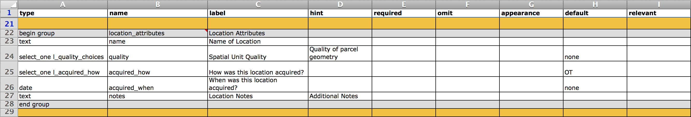
You can see each of these at work in the above example, taken from the survey tab of the standard questionnaire.
Notice that select_one - the dropdown option - requires identifying a set of choices to go with it. In the example above, the first dropdown menu specifies that cell A24 is linked to the choices tagged l_quality_choices. In the Choices tab, you can see the different options for l_quality_choices:
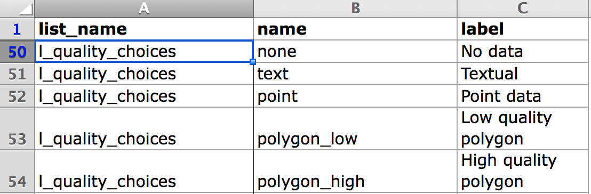
These options will appear in the dropdown when it's selected.
In addition to these basic data types, XLSForm offers many different data types for you to choose from.
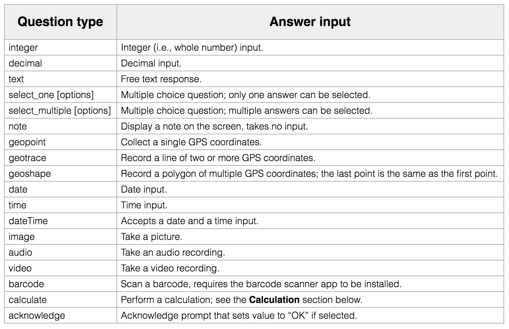
The type you need depends on the kinds of questions you need to ask. For example, if you need to collect an audio sample from an interviewee, you could select audio, which will prompt you to take an audio recording.
Questionnaire Sections
The customizable portion of the questionnaire has been organized into the following sections:
Location Attributes relate to to information about the location - like its name and boundaries.
Default Party Attributes specify the information that you collect about any party, be it an individual, group, or corporation.
Individual Party Attributes and Group Party Attributes each provide information specific to whether a party is an individual or group.
Party Relationship Attributes is for information specific to the relationship between a party and the location.
Tenure Relationship Attributes specify information about a party's tenure on the land.
Each of these sections relates to a piece of the Cadasta Platform's internal workings. In order for your questions to appear in the platform, they need to be in one of these sections.
The below image is taken from a custom questionnaire used by one of our partners. Here, they've added a number of custom fields in the party_attributes_default section:
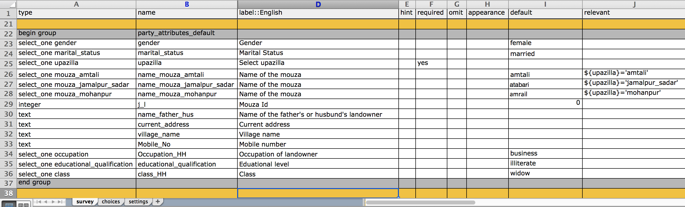
It is possible to create new sections, as another Cadasta partner has done below. Here, they've added a section on witnesses:
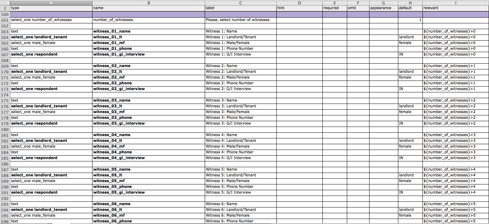
If you'd like to create new sections or significantly customize your questionnaire, we highly recommend that you contact us first. We're here to help!
Dropdown with All GeoTypes (GeoTrace, GeoPoint & GeoShape)
In some cases, you may want to give your data collectors the option to choose collecting data using GeoTrace, GeoPoint or GeoShape. If you do, you can modify to your form to make this possible. Alternatively, you can build out your questionnaire starting from this one.
If you'd like to update an existing questionnaire, here's what you need to do.
In the Survey tab of your questionnaire, add three rows just below row 11.
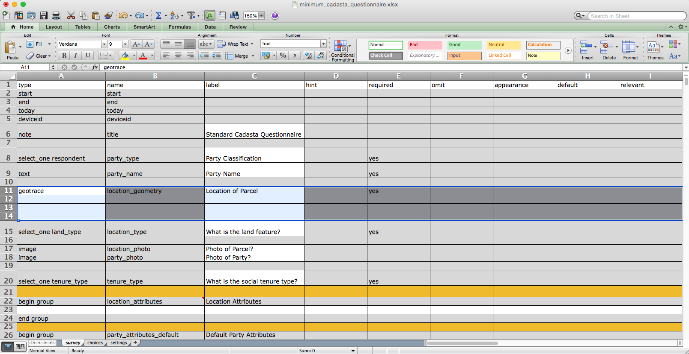
Then, copy and paste the below into rows 11 - 14.
| select_one geo_type | geo_type | Select type of geo collection | yes | geoshape | ||||
| geoshape | location_geoshape | Draw the location boundaries on the map | yes | ${geo_type}='geoshape' | ||||
| geotrace | location_geotrace | Please, walk through the location boundaries | yes | ${geo_type}='geoshape' | ||||
| geopoint | location_geopoint | Please, select a point | yes | ${geo_type}='geoshape' |
Note that you may need to use the Paste Special option and select Text in the pop-up window that follows.

Next, you'll need to add the following options to the the Choices tab of your spreadsheet. Again, you may need to paste this using the Paste Special option.
| geo_type | geoshape | Drawing coordinates on a map |
| geo_type | geotrace | Walking around the boundaries |
| geo_type | geopoint | Select a location point |
In the image below, the fields above have been pasted into a minimum questionnaire.
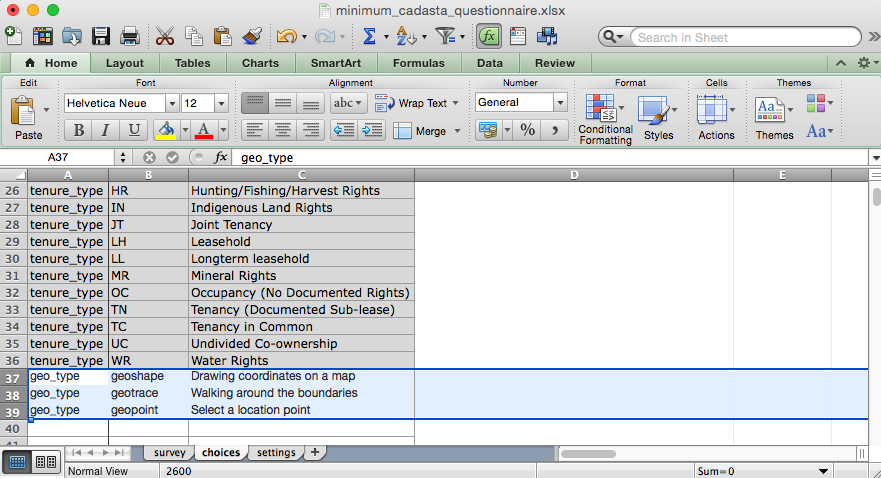
Now, when data collectors are collecting data in the field, they can choose which data collection method is best: GeoTrace, GeoPoint or GeoShape.
Steps to Creating Your Custom Questionnaire
The first thing you need to do is think through the questions you'll be asking in your data collection.
Identify your questions. What information do you need to collect in your project?
Identify each question's data entry type. What kind of entry would work best for each question - a date? A text field? A drop-down or multiple choice?
Identify where each question should go. Is this question about a party, location, relationship, or something else?
Once you've thought this through, you can start adding your questions to their appropriate section.
Before uploading your questionnaire to your project, check to make sure that:
- all of your data entry
typesmatch those listed on XLSForm and are spelled correctly. - all of your
namesare lowercase and contain no spaces. - all of your
list_namesin the Choices tab match the name you've given to your dropdowns in the Survey tab. - all of your
form_idsare distinct, contain no spaces, and start with a lowercase letter.
Simple misspellings and formatting inconsistencies can cause errors when it's time to collect data. For this reason, we highly recommend testing your data collection before heading out to the field.
If you're having trouble with your questionnaires, don't hesistate to contact us at any time - we're here to help you get your data collection just right.